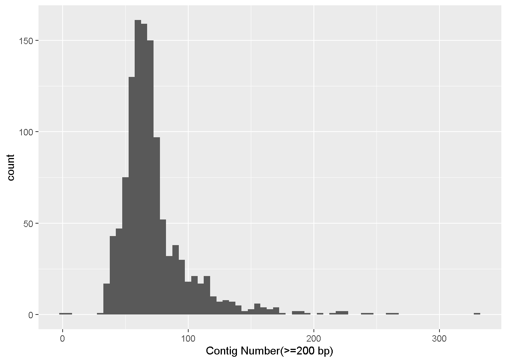
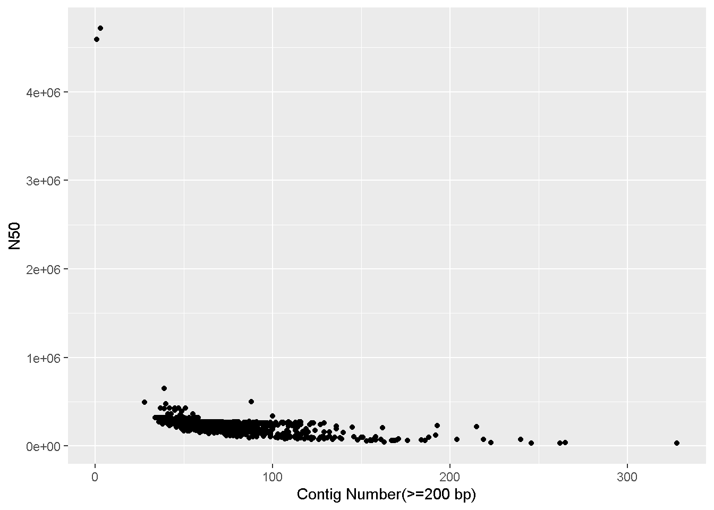
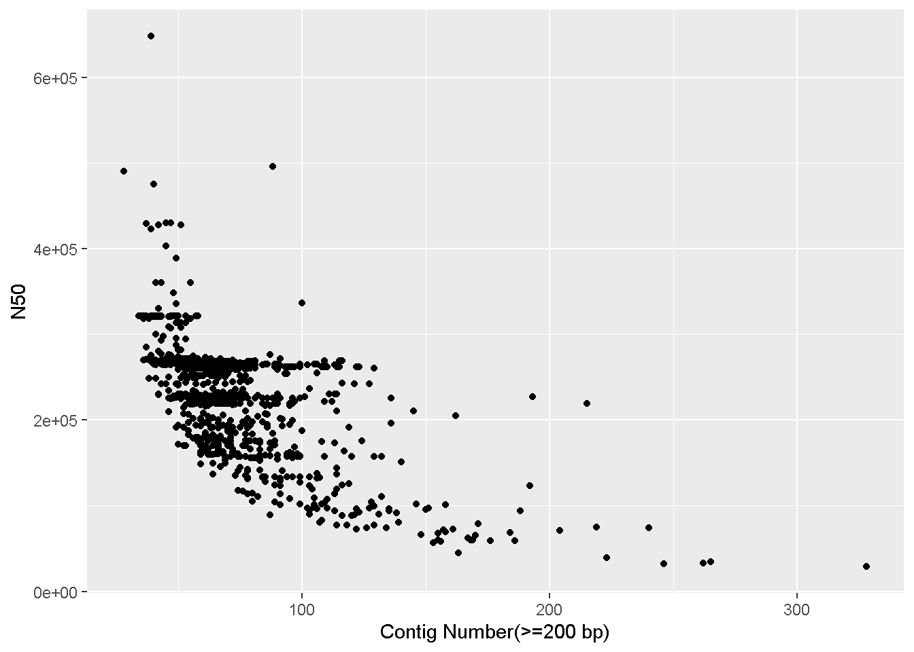
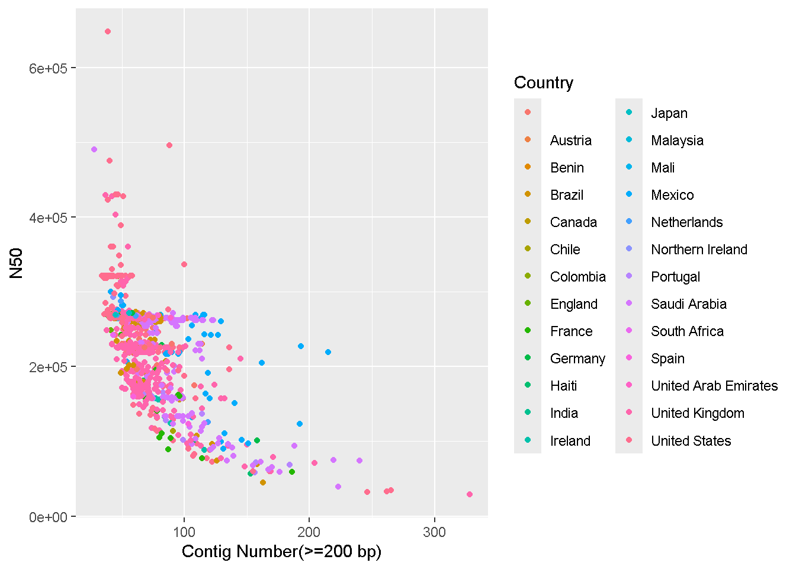
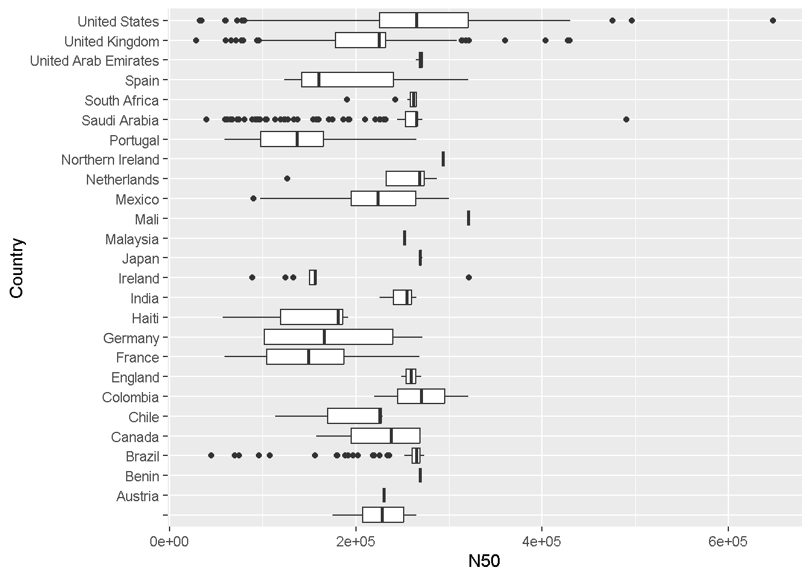

ggplot(data = enterobase_assemblystats,aes(x=`Contig Number(>=200 bp)`))+
geom_histogram(binwidth = 5)
Basic data visualization in RStudio
R is very commonly used in scientific research for statistical analysis and data visualization for many different types of data modalities.
R is a programming language, whereas Rstudio is an Integrated development environment or IDE.
The goal of an IDE is to provide a single environment for writing and running code, troubleshooting/debugging, package management as well as rendering visualizations.
In this workshop, we will primarily be using R/Rstudio for data visualization. I will quickly get to handling real tabular data and creating plots while explaining some basic concepts along the way. However, if you would like a comprehensive tutorial on the basics of R from scratch, please check out the Software Carpentry R tutorial and/or Swirl
Your RStudio will look something like this:
You can write your code in the Source pane and press ctrl + enter to run the selected line(s). This is your scripting environment where you can save everything you are typing.
Alternatively, you can also write code in the Console pane and press enter to run as you were doing for the bash command line. The code in the console is not saved.
Any datasets you load or variables/functions you set will be visible in the Environments pane.
Any plots/documents that you render will be visible in the Output pane.
New packages can be installed using install.packages("package_name")
Not all installed R packages are available by default. You can load packages using the library function.
The R working directory can be seen using the getwd() command
You can change the working directory using setwd("/path/to/dir")
install.packages(c("data.table","dplyr","tidyverse","ggplot2"))
library(dplyr)
library(tidyverse)
library(ggplot2)
getwd()
setwd("NWU_2025_workshop_data/test_datasets/results")We learned about Enterobase in Module 3. On your browser, navigate to the Enterobase Salmonella page, and search for the serovar ‘Minnesota’. Download the assemblystats table and the Achtman 7 Gene MLST table.
We are using the function fread which is part of the data.table package to read a table.
To use functions in R, you call the name of the function, and enclose the different values the function will accept within parenthesis.
To access the help page for any function, type ? followed by the name of the function
?freadfread is a function to quickly read .tsv or .csv files
enterobase_assemblystats<-fread(file="/path/to/20251020_enterobase_minnesota_assemblystats.tsv",header=T,sep="\t")fread(...) : Calling the fread functionfile="..." : Providing the path for the file to be readheader=T: Stating that the file has a header (which is the first line in the csv or tsv that has all the column names). T is short for TRUE.sep="\t": Stating the delimiter in the file, since our file is tab separated, we set the delimiter as \t.enterobase_assemblystats<-: We are saving the read table to an object called enterobase_assemblystats . Once it is saved, it should appear in your Environment pane. You can click on it here and it will open a new tab in your Source pane where you can browse through the table.Ggplot is the most common R tool used for creating publication quality plots.
ggplot follows a consistent grammar (The gg in ggplot means grammar of graphics) making it very easy to build upon.
Apart from the default ggplot options, there are several additional packages using the ggplot grammar such as ggtree, ggside, ggsignif and many others that are all very helpful in scientific data visualization. ggplot can make (almost) any kind of plot you can think of!
Lets make a simple histogram showing the distribution of the number of contigs in our dataset
ggplot(data = enterobase_assemblystats,aes(x=`Contig Number(>=200 bp)`))+
geom_histogram(binwidth = 5)
ggplot() : Calling the ggplot functiondata = enterobase_assemblystats: The data that we want to use, here it is enterobase_assemblystats, which is the enterobase table that we readaes() : These are the mapping aesthetics (i.e which column of the input dataset we want our x and y axes to be)
x=`Contig Number(>=200 bp)` : The name of the column we want on the x axis.(>=) which can have different special meaning. So we have to take some extra steps to make sure the column names are read properly.x=column_name if your column names don’t have any special characters+ geom_histogram(binwidth = 5) - Adding a new layer
+ symbol is used to signify the addition of a new layer. We used ggplot() to tell it what data to use, and now we use geom_ to tell it how to visually represent the data.geom_histogram is the histogram function in ggplot.binwidth = 5 is a value for the width of the histogram “bars” that geom_histogram accepts. This is the range of values that are represented by one bar in the histogram. Increase or decrease this number to see how it changes the plot!Make a scatter plot (geom_point) with the number of contigs on the x axis and the N50 value in the y axis
ggplot(data = enterobase_assemblystats,aes(x=`Contig Number(>=200 bp)`,y=N50))+
geom_point()
ggplot() : Calling the ggplot functiondata = enterobase_assemblystats: The data that we want to use, here it is enterobase_assemblystats, which is the QUAST output table that we readaes() : These are the mapping aesthetics (i.e which column of the input dataset we want our x and y axes to be)
x=`Contig Number(>=200 bp), y=N50` : The name of the columns we want on the x and y axes.+ geom_point() - Adding the scatterplot function in ggplotLooks like there are two complete genomes in the table with very high N50 values that’s throwing off the scale!
We can make the plot with only samples having N50 values less than 4 million (<4e+06).
This means we have to subset the enterobase_assemblystats table, only keeping rows where the N50 column has a value less than 4 million
We can do this like so:
enterobase_assemblystats[enterobase_assemblystats$N50 < 4e+06,]enterobase_assemblystats$N50 : The $ sign is used to call a specific column within the dataframe. Here we are calling the “N50” column.< 4e+06 means ‘less than 4 million’. This is our conditionenterobase_assemblystats$N50 < 4e+06 : Type this in the console and look at the output! You will see a list (in R, this is called a vector) of ‘TRUE’ and/or ‘FALSE’ values. It is telling us for which rows the above condition (i.e, N50 < 4 million) is TRUE (or FALSE)enterobase_assemblystats[enterobase_assemblystats$N50 < 4e+06,] : This is how you filter a dataframe in R.
dataframe[rows,columns]rows - we have our condition which is all the rows where N50 < 4e+06. `enterobase_assemblystats[enterobase_assemblystats$N50 < 4e+06,c(1,4,7)]` will print only the first, fourth and seventh column of the dataframe. After the **comma** we specify the columns we want, enclosed in `c()`.
You can run `colnames(dataframe)` to see the names of all the columns (and the column number). Run `colnames(enterobase_assemblystats)` on the console and find the number for the N50 column!We can thereby alter the ggplot command this: Note that it is identical to the previous ggplot command, we have only changed what we give as input to data.
ggplot(data = enterobase_assemblystats[enterobase_assemblystats$N50<4000000,],aes(x=`Contig Number(>=200 bp)`,y=N50))+
geom_point()
Try playing around with different x and y axes, and also different filters. You can also add a color / fill to aes to colour your datapoints/bars based on a specific factor.
ggplot(data = enterobase_assemblystats[enterobase_assemblystats$N50<4000000,],aes(x=`Contig Number(>=200 bp)`,y=N50,color=Country))+
geom_point()
geom_boxplotggplot(data = enterobase_assemblystats[enterobase_assemblystats$N50<4000000,],aes(x=N50,y=Country))+
geom_boxplot()
We saw how to subset/filter a dataframe. Lets look at some more examples
You will see that your enterobase table has many missing or “NA” values. We can select only specific rows that do not have missing values. For eg: Lets select only the “Uberstrain”,“Source Niche”, “Collection Year”, “Country”, and “Sample ID” columns and remove all rows with ‘NA’ such that only rows where all four columns have values will be present
First select only the columns we want. Use colnames(enterobase_assemblystats) to get the column numbers for our desired columns (alternatively you can also specify the names in quotes separated by commas within c() ).
Write the subsetted dataframe to a new dataframe using <-
enterobase_assemblystats_filtered<-enterobase_assemblystats[,c(1,5,8,13,29)]Now remove all “NA” values from the new dataframe.
enterobase_assemblystats_filtered<-enterobase_assemblystats_filtered[complete.cases(enterobase_assemblystats_filtered)]You can see in the ‘Source Niche’ column in the filtered dataframe that there are still some blank values that did not get marked appropriately as ‘NA’. There are also some columns marked ‘ND’ which is effectively the same as a missing value. These types of errors are common with public data which is why you must always double check after filtering.
How do you check if all the values in a column are OK?
An easy trick is to use the table command, which produces frequency tables. That is, it prints out every value in a column along with the number of times that value has occurred.
table(enterobase_assemblystats_filtered$`Source Niche`)
Animal Feed Companion Animal Environment
62 12 1 60
Food Human Livestock ND
261 154 29 20
Poultry Wild Animal
82 2 Here we can see a blank value has occurred 62 times and “ND” has occurred 20 times in the filtered set. Lets remove all rows where the “Source Niche” column has value = “” (blank) or = “ND”
enterobase_assemblystats_filtered<-enterobase_assemblystats_filtered[!enterobase_assemblystats_filtered$`Source Niche` %in% c("","ND"),]dataframe[rows,columns]rows, we entered !enterobase_assemblystats_filtered$`Source Niche` %in% c("","ND")
! means NOT , so by starting the condition with !, we are saying “For rows where the following condition is NOT TRUEenterobase_assemblystats_filtered$`Source Niche` : Refers to the “Source Niche” column, enclosed in backticks because of the space character%in% c("","ND") : means if the value is in the list c("","ND") - which are the values we are looking for (“” is blank, and “ND” is ND)Alternatively, if you know what you are looking for, you can appropriately specify what values should be counted as NA right when you read your dataframe using the na.strings= option.
enterobase_assemblystats<-fread("/home/vishnu/UmeaU_backup/NWU_2025_workshop/NWU_2025_workshop_data/test_datasets/20251020_enterobase_minnesota_assemblystats.tsv",na.strings = c("ND","","Unkown","unknown"))You can merge two different data frames by a common column using merge
Read in the enterobase 7 Gene MLST table you downloaded
The advantage with fread is that you can select exactly which columns to read in right at the start so that the whole table isn’t read. In our case, we only want column 1 and 34, so we specify that as select = c(1,34).
enterobase_mlst<-fread(file="/path/to/20251020_enterobase_minnesota_mlst.tsv",header=T,sep="\t",select = c(1,34))Lets merge the MLST table with our filtered assemblystats table using the merge command
enterobase_assemblystats_mlst_merged<-merge(enterobase_assemblystats_filtered,enterobase_mlst,by="Uberstrain")merge function is used like so: merge(dataframe_1,dataframe_2,by="column_name")You can add a new column based on a specific condition using the mutate function. For example lets say we want a column called ‘is_human’ which will have the values “yes” if “Source Niche” equals “Human” and “no” if not.
enterobase_assemblystats_mlst_merged<-mutate(enterobase_assemblystats_mlst_merged, is_human = if_else(`Source Niche` == "Human", "yes", "no"))mutate function like so: mutate(dataframe, <name for new column> = <value for new column>)is_human , and used an if_else condition for the valueif_else(`Source Niche` == "Human", "yes", "no") : if_else(<CONDITION>,<What to do if TRUE>,<What to do if FALSE>)
==) “Human”. If true, then the value for the new column is_human is “yes”, else, the value is “no”If you want the mean of a column, say N50, you can simply do:
mean(enterobase_assemblystats$N50, na.rm = TRUE)[1] 238868.8The na.rm option is to remove the NA values.
But what if you want the mean N50 value for each country? That is where the function group_by is used
enterobase_assemblystats %>% group_by(Country) %>% summarise(mean_N50_per_country = mean(N50, na.rm = TRUE))# A tibble: 26 × 2
Country mean_N50_per_country
<chr> <dbl>
1 "" 455326.
2 "Austria" 230209
3 "Benin" 268875
4 "Brazil" 252957.
5 "Canada" 225783.
6 "Chile" 189261
7 "Colombia" 270202.
8 "England" 259390
9 "France" 153003.
10 "Germany" 175992.
# ℹ 16 more rows%>% is similar to the | (pipe) character in bash.enterobase_assemblystats %>% group_by() pipes the enterobase_assemblystats table to the group_by functiongroup_by(Country) %>% : we want to group the different rows from the input by the “Country” column. This creates as many “groups” as there are countries. When we pipe this out, each “group” will be treated separately.summarise(mean_N50_per_country = mean(N50, na.rm = TRUE)) :
summarise function, which will now provide a “summary” for each group.mean_N50_per_countrymean(N50, na.rm = TRUE) is the same mean function we used above. We are using the mean function to get the mean of N50 values while removing any missing values using na.rm=TRUE